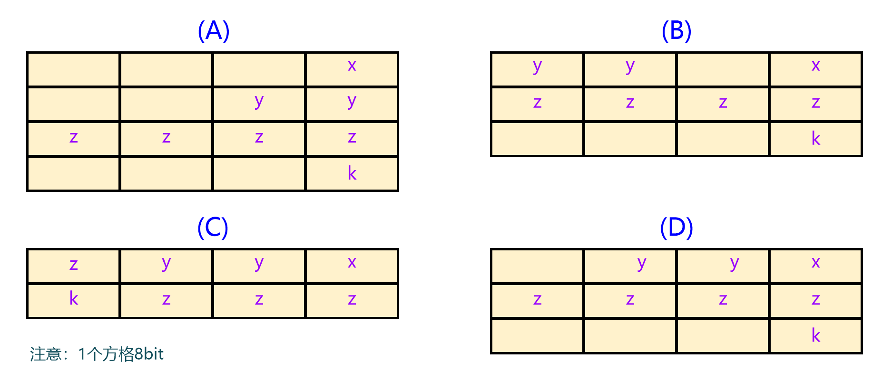

<!DOCTYPE lake>
<h1 data-lake-id="JYJ6X" id="JYJ6X"><span data-lake-id="u5477b78d" id="u5477b78d">1&gt; 求数据大小</span></h1><h3 data-lake-id="vIIVQ" id="vIIVQ"><span data-lake-id="u171a6256" id="u171a6256">1.1&gt; 某32位单片机上有如下代码</span></h3><span class="yuque-card-unsupported">[codeblock]</span><p data-lake-id="u20a3d62f" id="u20a3d62f"><span data-lake-id="u5c14f0db" id="u5c14f0db">求：</span></p><span class="yuque-card-unsupported">[codeblock]</span><p data-lake-id="u9939cc62" id="u9939cc62"><br/></p><h3 data-lake-id="PcV37" id="PcV37"><span data-lake-id="u9ae92eac" id="u9ae92eac">1.2&gt; 以下定义的结构体占内存多少字节</span></h3><span class="yuque-card-unsupported">[codeblock]</span><p data-lake-id="ua8164db5" id="ua8164db5"><br/></p><h3 data-lake-id="dNmdN" id="dNmdN"><span data-lake-id="u2af2cfff" id="u2af2cfff">1.3&gt; 简要计算</span></h3><span class="yuque-card-unsupported">[codeblock]</span><p data-lake-id="u3c4f2ec4" id="u3c4f2ec4"><br/></p><span class="yuque-card-unsupported">[codeblock]</span><p data-lake-id="ucee727cd" id="ucee727cd"><br/></p><span class="yuque-card-unsupported">[codeblock]</span><hr/><h3 data-lake-id="CXGo3" id="CXGo3"><span data-lake-id="u27b46ac2" id="u27b46ac2">1.4&gt; 结构体位域</span></h3><p data-lake-id="u4b7c9972" id="u4b7c9972"><span data-lake-id="u19e6c46d" id="u19e6c46d">在32位系统中，求struct A类型的大小</span></p><span class="yuque-card-unsupported">[codeblock]</span><p data-lake-id="ue4895541" id="ue4895541"><br/></p><p data-lake-id="u11ceea20" id="u11ceea20"><span class="lake-fontsize-12" data-lake-id="u04065d6f" id="u04065d6f" style="color: var(--md-box-samantha-normal-text-color) !important">在 32 位系统中，</span><code data-lake-id="uebf5f55a" id="uebf5f55a"><span class="lake-fontsize-11" data-lake-id="uf245ffbc" id="uf245ffbc" style="color: var(--color-text-primary)">struct A</span></code><span class="lake-fontsize-12" data-lake-id="u5a2f1f3c" id="u5a2f1f3c" style="color: var(--md-box-samantha-normal-text-color) !important"> 的大小通常为 8 Byte。</span></p><p data-lake-id="uf89bb57e" id="uf89bb57e"><span class="lake-fontsize-12" data-lake-id="ud378e651" id="ud378e651" style="color: var(--md-box-samantha-normal-text-color) !important">其中，</span><code data-lake-id="uec28dcab" id="uec28dcab"><span class="lake-fontsize-11" data-lake-id="u6b69d393" id="u6b69d393" style="color: var(--color-text-primary)">a</span></code><span class="lake-fontsize-12" data-lake-id="u3285c4fe" id="u3285c4fe" style="color: var(--md-box-samantha-normal-text-color) !important"> 和 </span><code data-lake-id="u919b7bcf" id="u919b7bcf"><span class="lake-fontsize-11" data-lake-id="ua0bc13a9" id="ua0bc13a9" style="color: var(--color-text-primary)">b</span></code><span class="lake-fontsize-12" data-lake-id="uefd15a3f" id="uefd15a3f" style="color: var(--md-box-samantha-normal-text-color) !important"> 共用1Byte，</span></p><p data-lake-id="uf7ba3dfc" id="uf7ba3dfc"><code data-lake-id="uae23e665" id="uae23e665"><span class="lake-fontsize-11" data-lake-id="ud61606c9" id="ud61606c9" style="color: var(--color-text-primary)">c</span></code><span class="lake-fontsize-12" data-lake-id="ue80e0b63" id="ue80e0b63" style="color: var(--md-box-samantha-normal-text-color) !important"> 占用1Byte，</span></p><p data-lake-id="uc66663eb" id="uc66663eb"><span class="lake-fontsize-12" data-lake-id="ua80a819a" id="ua80a819a" style="color: var(--md-box-samantha-normal-text-color) !important">然后由于 </span><code data-lake-id="u4081526b" id="u4081526b"><span class="lake-fontsize-11" data-lake-id="u7ac2f0f3" id="u7ac2f0f3" style="color: var(--color-text-primary)">unsigned long</span></code><span class="lake-fontsize-12" data-lake-id="u025a7fd5" id="u025a7fd5" style="color: var(--md-box-samantha-normal-text-color) !important"> 类型需要 4 字节对齐，所以在 </span><code data-lake-id="ub9425c46" id="ub9425c46"><span class="lake-fontsize-11" data-lake-id="ue03b8986" id="ue03b8986" style="color: var(--color-text-primary)">c</span></code><span class="lake-fontsize-12" data-lake-id="u15ff238f" id="u15ff238f" style="color: var(--md-box-samantha-normal-text-color) !important"> 之后会填充 2 个字节，使得 </span><code data-lake-id="u55a97de1" id="u55a97de1"><span class="lake-fontsize-11" data-lake-id="u57165510" id="u57165510" style="color: var(--color-text-primary)">d</span></code><span class="lake-fontsize-12" data-lake-id="u7b38452a" id="u7b38452a" style="color: var(--md-box-samantha-normal-text-color) !important"> 能够从一个 4 字节对齐的地址开始存储，</span><code data-lake-id="u45341903" id="u45341903"><span class="lake-fontsize-11" data-lake-id="ue490bcba" id="ue490bcba" style="color: var(--color-text-primary)">d</span></code><span class="lake-fontsize-12" data-lake-id="u6d4d1c98" id="u6d4d1c98" style="color: var(--md-box-samantha-normal-text-color) !important"> 本身占用 4 Byte；</span></p><hr/><h3 data-lake-id="ie9mj" id="ie9mj"><span data-lake-id="u61e7ea2e" id="u61e7ea2e">1.5&gt;  结构体-内存对齐</span></h3><p data-lake-id="ufeb996db" id="ufeb996db"><span class="lake-fontsize-12" data-lake-id="ue0ba2acb" id="ue0ba2acb" style="color: var(--md-box-samantha-normal-text-color) !important">在32位的计算机上运行，各元素在RAM中正确的存储位置是：（ ）</span></p><p data-lake-id="u908e691d" id="u908e691d"><span data-lake-id="u82fa90c8" id="u82fa90c8" style="color: #117CEE">// 注意图形中1个方格是8bit；</span></p><span class="yuque-card-unsupported">[codeblock]</span><p data-lake-id="u9285b6f2" id="u9285b6f2"></p><hr/><h1 data-lake-id="mF8qO" id="mF8qO"><span data-lake-id="ufbef96fe" id="ufbef96fe">2&gt; static, volatile,const</span></h1><h3 data-lake-id="mxc9q" id="mxc9q"><span data-lake-id="u89543fcc" id="u89543fcc">2.1&gt; 简述下面3个指针的区别</span></h3><span class="yuque-card-unsupported">[codeblock]</span><hr/><h3 data-lake-id="Ewdi6" id="Ewdi6"><span data-lake-id="u59651d14" id="u59651d14">2.2&gt; 简要说明 static, volatile, const 三个关键字的用法</span></h3><span class="yuque-card-unsupported">[codeblock]</span><p data-lake-id="u5158b1ac" id="u5158b1ac"><br/></p><hr/><h1 data-lake-id="FJQJK" id="FJQJK"><span data-lake-id="u09711b32" id="u09711b32">3&gt; 指针</span></h1><h3 data-lake-id="ojUuG" id="ojUuG"><span data-lake-id="ub16bf4d4" id="ub16bf4d4">3.1&gt; 请从0x10010000地址中取出无符号的32位整型数据并存储在变量a中</span></h3><span class="yuque-card-unsupported">[codeblock]</span><hr/><h3 data-lake-id="reHrd" id="reHrd"><span data-lake-id="ua5d66d30" id="ua5d66d30">3.2&gt; 用变量a给出下面的定义</span></h3><p data-lake-id="u7f9ce9f9" id="u7f9ce9f9"><span data-lake-id="u5ff3063d" id="u5ff3063d">1》一个指向指针的指针，它指向的指针是指向一个整型数；</span></p><p data-lake-id="ue4e01a20" id="ue4e01a20"><span data-lake-id="u28392848" id="u28392848">2》一个有10个指针的数组，该指针是指向一个整型数；</span></p><p data-lake-id="u6e4391f0" id="u6e4391f0"><span data-lake-id="uc243954f" id="uc243954f">3》一个指向有10个整型数组的指针；</span></p><p data-lake-id="uba217f4c" id="uba217f4c"><span data-lake-id="u87e1e60a" id="u87e1e60a">4》一个指向函数的指针，该函数有一个整型参数并返回一个整型数；</span></p><p data-lake-id="ub0693d47" id="ub0693d47"><span data-lake-id="uf42ec53b" id="uf42ec53b">5》一个有10个指针的数组，该指针指向函数，该函数有一个整型参数并返回一个整型数；</span></p><hr/><h3 data-lake-id="GLZUq" id="GLZUq"><span data-lake-id="ub252ecc5" id="ub252ecc5">3.3&gt; 请写出如下代码的执行结果</span></h3><span class="yuque-card-unsupported">[codeblock]</span><hr/><h1 data-lake-id="aaP6O" id="aaP6O"><span data-lake-id="u2df136c0" id="u2df136c0">4&gt; 运算</span></h1><h3 data-lake-id="iO6RS" id="iO6RS"><span data-lake-id="u24b2c075" id="u24b2c075">4.1&gt; 编写(uint16_t)BIT5 置位及清零宏定义；</span></h3><hr/><h3 data-lake-id="GiGj8" id="GiGj8"><span data-lake-id="u4350f713" id="u4350f713">4.2&gt; 给定一个整型变量a，写2段代码。</span></h3><p data-lake-id="u2ebf2c10" id="u2ebf2c10"><span data-lake-id="ua38b9228" id="ua38b9228">第一个置位a的bit3，第二个清零a的bit3. 以上2个操作中，要保持其他位不变；</span></p><hr/><h3 data-lake-id="dd52x" id="dd52x"><span data-lake-id="u02acff1d" id="u02acff1d">4.3&gt; 请指出下面的代码是否有误？如无误，请写出编译器的处理过程</span></h3><span class="yuque-card-unsupported">[codeblock]</span><p data-lake-id="uf0330729" id="uf0330729"><span data-lake-id="u1d173584" id="u1d173584">​</span><br/></p><hr/><h1 data-lake-id="WLo2o" id="WLo2o"><span data-lake-id="u7c56219d" id="u7c56219d">5&gt; 预处理</span></h1><h3 data-lake-id="Z7V5b" id="Z7V5b"><span data-lake-id="u8d4bafa2" id="u8d4bafa2">5.1&gt; 下面这个程序执行后会有什么错误或者效果；如存在问题则修改，得出返回值等于多少？</span></h3><span class="yuque-card-unsupported">[codeblock]</span><p data-lake-id="u1e0be1d9" id="u1e0be1d9"><br/></p><h3 data-lake-id="QEmeg" id="QEmeg"><span data-lake-id="u54f02be2" id="u54f02be2">5.2&gt; 写一个“标准”宏MIN， 这个宏输入2个参数并返回较小的一个。</span></h3><span class="yuque-card-unsupported">[codeblock]</span><h3 data-lake-id="GQZP4" id="GQZP4"><span data-lake-id="ud5257f88" id="ud5257f88">5.3&gt; 头文件中的 ifndef / define / endif的作用</span></h3><h3 data-lake-id="SFir7" id="SFir7"><span data-lake-id="ua0a9ddf5" id="ua0a9ddf5">5.4&gt; </span><span class="lake-fontsize-12" data-lake-id="u5f7c2c7e" id="u5f7c2c7e" style="color: rgba(0, 0, 0, 0.85)">用宏定义</span><code data-lake-id="uf8cfe52c" id="uf8cfe52c"><span class="lake-fontsize-12" data-lake-id="ufbef590d" id="ufbef590d" style="color: rgba(0, 0, 0, 0.85)">#define</span></code><span class="lake-fontsize-12" data-lake-id="u0425254f" id="u0425254f" style="color: rgba(0, 0, 0, 0.85)">声明一个表示 1 年中有多少毫秒（忽略闰年）的常数</span></h3><span class="yuque-card-unsupported">[codeblock]</span><p data-lake-id="u5e053de2" id="u5e053de2"><span class="lake-fontsize-12" data-lake-id="ua68e1c6e" id="ua68e1c6e" style="color: rgba(0, 0, 0, 0.85)">使用</span><code data-lake-id="u3b7e69a0" id="u3b7e69a0"><span class="lake-fontsize-12" data-lake-id="u855a2b88" id="u855a2b88" style="color: rgba(0, 0, 0, 0.85)">UL</span></code><span class="lake-fontsize-12" data-lake-id="u5950b036" id="u5950b036" style="color: rgba(0, 0, 0, 0.85)">后缀是为了确保计算结果被当作无符号长整型来处理，以防止可能出现的</span><strong><span class="lake-fontsize-12" data-lake-id="u6092c2a3" id="u6092c2a3" style="color: #DF2A3F">整数溢出</span></strong><span class="lake-fontsize-12" data-lake-id="u2ecfd0c9" id="u2ecfd0c9" style="color: rgba(0, 0, 0, 0.85)">问题；</span></p><hr/><h3 data-lake-id="dRv9X" id="dRv9X"><span data-lake-id="u59887376" id="u59887376" style="color: rgba(0, 0, 0, 0.85)">5.5&gt; </span><span class="lake-fontsize-12" data-lake-id="u40d4ce64" id="u40d4ce64" style="color: rgba(0, 0, 0, 0.85)">用宏定义来求给定数组元素个数</span></h3><span class="yuque-card-unsupported">[codeblock]</span><hr/><h1 data-lake-id="H5XP5" id="H5XP5"><span data-lake-id="u1e43ccdd" id="u1e43ccdd">6&gt; 共用体</span></h1><h3 data-lake-id="fM83a" id="fM83a"><span data-lake-id="u9b30dbbc" id="u9b30dbbc">6.1&gt; p-&gt;i的值是多少？</span></h3><span class="yuque-card-unsupported">[codeblock]</span><p data-lake-id="u77a26dba" id="u77a26dba"><br/></p><hr/><h1 data-lake-id="Ub7SS" id="Ub7SS"><span data-lake-id="u7b47bea8" id="u7b47bea8">7&gt; 内存</span></h1><h3 data-lake-id="nuAWI" id="nuAWI"><span data-lake-id="u95afa549" id="u95afa549">7.1&gt; 堆和栈的区别</span></h3><span class="yuque-card-unsupported">[codeblock]</span><hr/><h3 data-lake-id="tclwy" id="tclwy"><span data-lake-id="ub37d659b" id="ub37d659b">7.2&gt; 嵌入式系统 从堆（heap）中动态分配内存的过程，可能发生的问题是什么？</span></h3><hr/><h1 data-lake-id="MIquJ" id="MIquJ"><span data-lake-id="u5f35c526" id="u5f35c526">8&gt; 功能实现</span></h1><h3 data-lake-id="mXC4Q" id="mXC4Q"><span data-lake-id="uaa34e816" id="uaa34e816">8.1&gt; 写个函数，在不用第三方参数的情况下，交换两个整数的值；</span></h3><h3 data-lake-id="D8zza" id="D8zza"><span data-lake-id="u38ec22d5" id="u38ec22d5">8.2&gt; 用c语言实现字符串strcpy函数；</span></h3><h3 data-lake-id="xWa2h" id="xWa2h"><span data-lake-id="u28b44dda" id="u28b44dda">8.3&gt; 简单编写一个排序算法程序；</span></h3><hr/><h1 data-lake-id="zaz8L" id="zaz8L"><span data-lake-id="u9b71d72a" id="u9b71d72a">9&gt; 数据范围</span></h1><h3 data-lake-id="MxSto" id="MxSto"><span data-lake-id="u6bcf6fc9" id="u6bcf6fc9">9.1&gt; 请写出如下代码的执行结果</span></h3><span class="yuque-card-unsupported">[codeblock]</span><hr/><h1 data-lake-id="Hgbp6" id="Hgbp6"><span data-lake-id="ud850b95a" id="ud850b95a">10&gt; 算法</span></h1><h3 data-lake-id="GhhmV" id="GhhmV"><span data-lake-id="u67330ff6" id="u67330ff6">10.1&gt; 给出衡量一个算法好坏的标准</span></h3><p data-lake-id="u8437d535" id="u8437d535"><span class="lake-fontsize-12" data-lake-id="uac8e97c0" id="uac8e97c0">时间复杂度，空间复杂度</span></p><h1 data-lake-id="MNvPM" id="MNvPM"><span data-lake-id="uaca33584" id="uaca33584">11&gt; 数学</span></h1><h3 data-lake-id="Bjetp" id="Bjetp"><span data-lake-id="u5441b881" id="u5441b881">11.1&gt; 推导下面数列中An（n&gt;=0）的值</span></h3><p data-lake-id="ub116241a" id="ub116241a"><code data-lake-id="uaba7beec" id="uaba7beec"><span class="lake-fontsize-12" data-lake-id="u0211b25f" id="u0211b25f">1, 5, 11, 19, 29, 41,... An;</span></code></p><p data-lake-id="u83b9d6bf" id="u83b9d6bf"><span class="lake-fontsize-12" data-lake-id="u3349e2e6" id="u3349e2e6">答案：</span><span class="lake-fontsize-12" data-lake-id="u063a4eb9" id="u063a4eb9" style="color: rgba(0, 0, 0, 0.85)">An = n^2 + n - 1;</span></p><p data-lake-id="u21c1492f" id="u21c1492f"><br/></p>